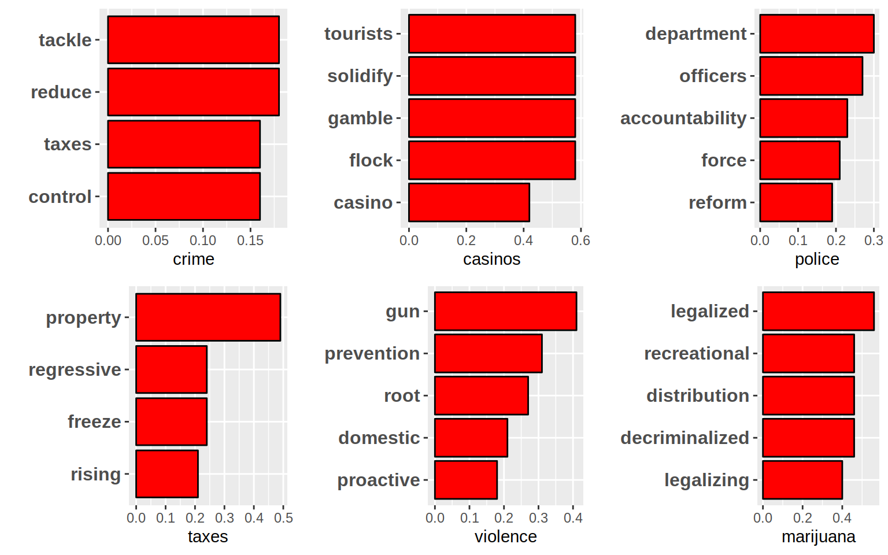

Chapter 5 Word Associations
In this section, we will look at an example of some words representing various issues facing The City of Chicago, and the terms used in the campaigns that best correlate with them.
5.1 Process
In the code below, we will take the text from all of the tweets, get rid of stop words, url’s, numbers, hashtags, and other characters not part of the message of the tweet. The names of the candidates are also removed. The remaining text is then parsed out into individual words paired with the tweet they appeared in.
Using the cast_dtm() function from the tm package, the words and tweets are then cast into a sparse matrix. Finally, depending on the term we use, the correlation between the term and the words in the matrix is calculated. The top results for each term is plotted below.
The findAssocs() function, also from the tm package, is used to find the best correlation results for terms above a certain threshold. The terms to be examined are the following:
- Crime
- Casinos
- Police
- Taxes
- Violence
- Marijuana

A note about the results: although we are looking for the best correlating terms, some of these correlations may look low. However, when considering the many available words that could appear in the same tweets, a low score does not necessarily mean a weak pairwise term association.